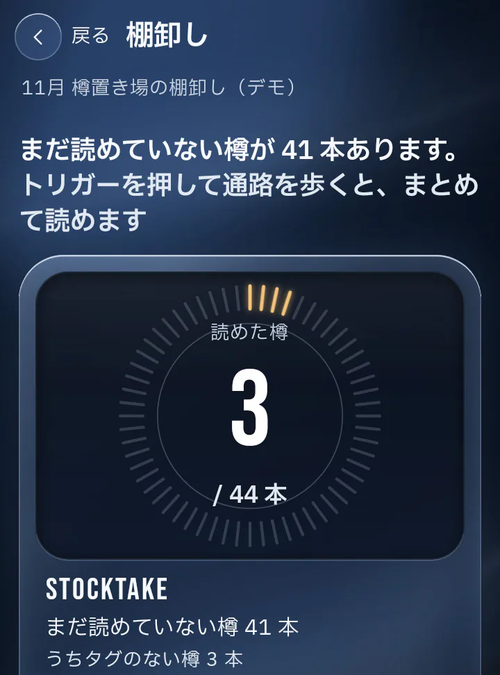
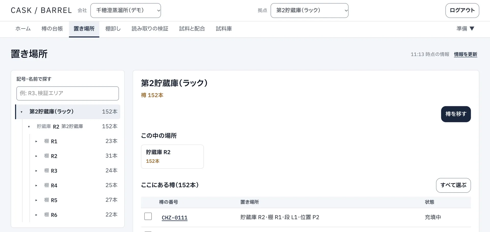
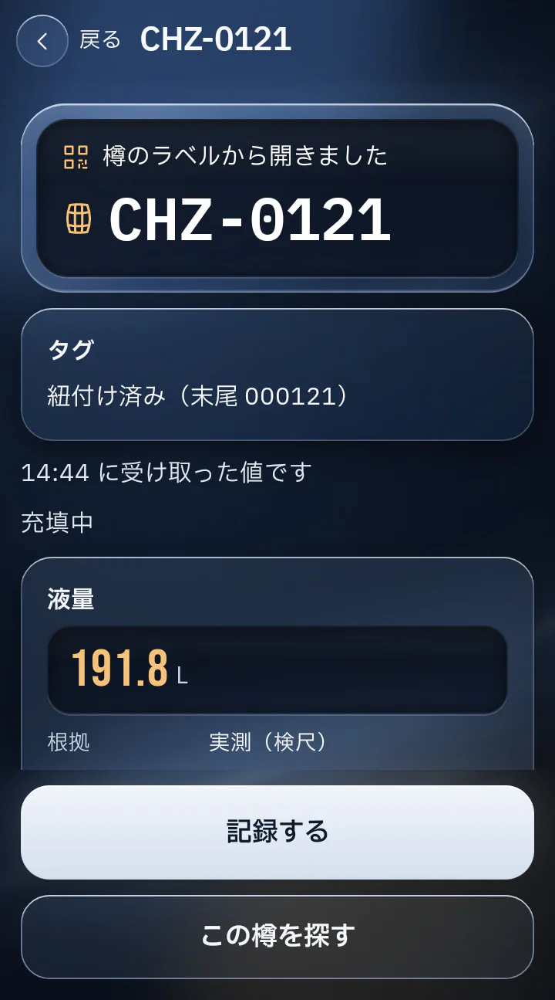
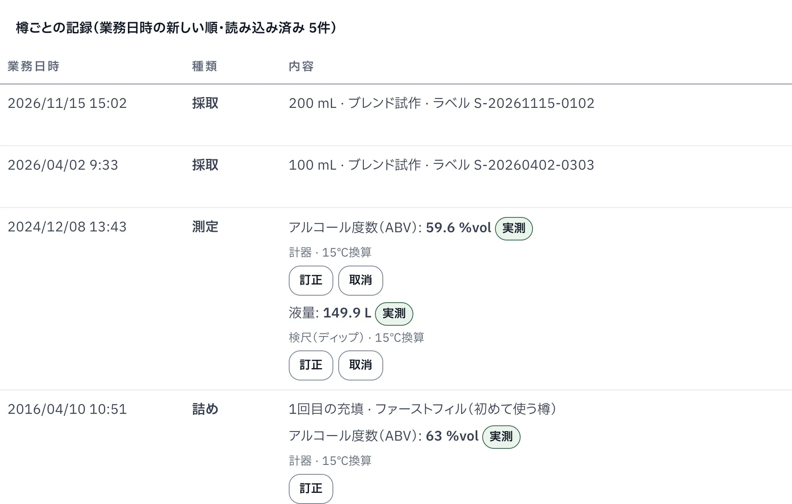
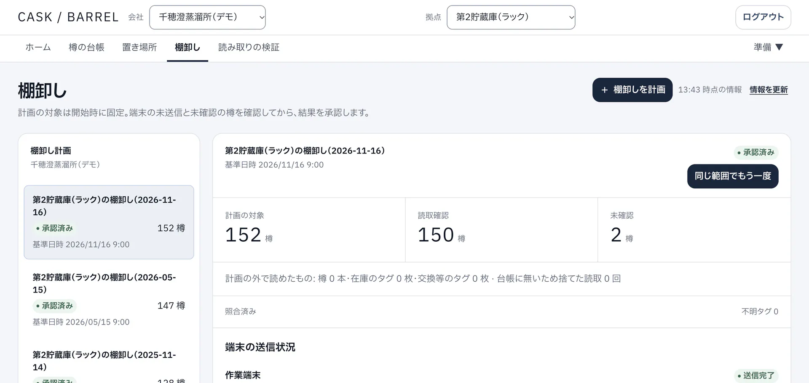
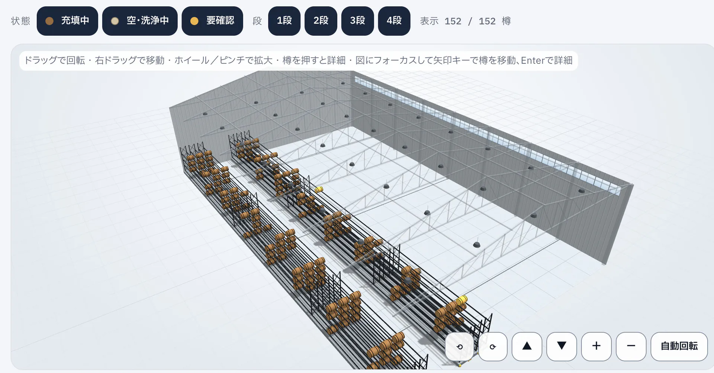
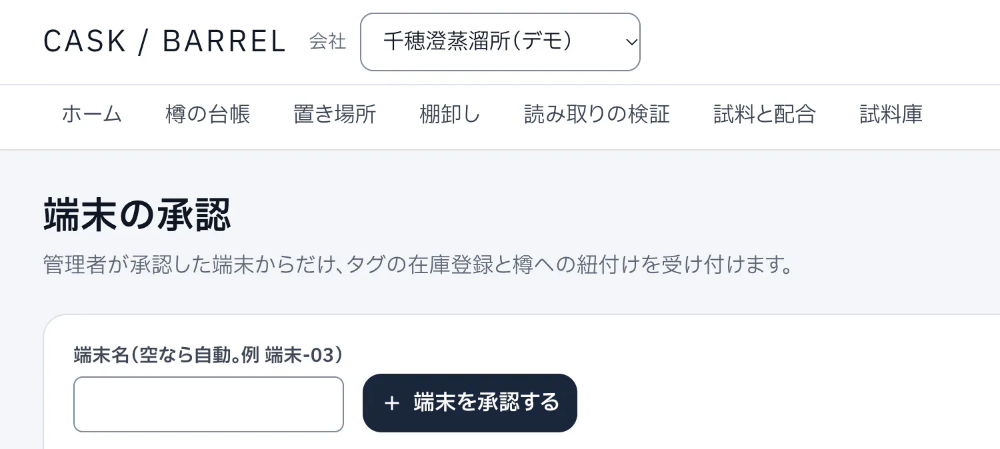
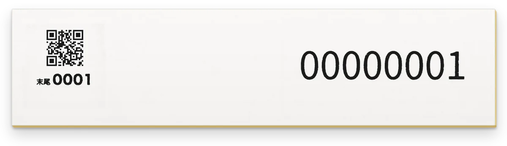

棚の前を歩いて、まとめて数える
RFIDリーダーを持って通路を歩くと、樽に貼ったタグをまとめて読みます。読めた樽の数がその場で増え、読めていない樽だけが一覧に残ります。
読み取れる距離や確実さは、タグと貯蔵庫の置き方で変わります。

ウイスキー蒸溜所
樽1本ごとの置き場所と、詰めた日・測った値・移し替えを、貯蔵庫の端末と事務所の画面で1つの台帳にします。いまお使いのしくみを置き換えるものではありません。

1棟・1区画から
何年も動かさない樽の置き場所が、担当の人の記憶と表計算の一覧にしかない。そんな貯蔵庫でも、移す・数える・測るといういつもの作業のついでに、台帳を重ねていけます。
RFIDリーダーを持って通路を歩くと、樽に貼ったタグをまとめて読みます。読めた樽の数がその場で増え、読めていない樽だけが一覧に残ります。
読み取れる距離や確実さは、タグと貯蔵庫の置き方で変わります。

番号か一覧で樽を選び、RFIDリーダーを向けて歩きます。近づくほど数字が上がり、音が速くなります。
液量や度数は、樽の前で現場アプリから入れます。測り方と日時と一緒に、事務所の画面へ届きます。

詰めた日、測った値、移し替え、採取が、樽1本ごとに並びます。

区画ごとに分担
貯蔵庫や区画が増えても、同じ台帳の上で、区画ごとに回を分けて進められます。
管理ポータルで、数える区画と、読みに使う端末を選んで、棚卸しの回を立てます。区画ごとに回を分ければ、担当を分けて進められます。

見つからなかった樽や、置き場所の違った樽には、現場の端末か管理ポータルで理由を付けます。承認は、責任者が管理ポータルで行います。訂正も取り消しも、理由と一緒に履歴に残ります。

列の配置を図面で、棚の段までを立体で見渡せます。樽の色で、状態（充填中・空・要確認）が分かります。

新しい端末と RFIDリーダーは、管理者が確かめてから使えるようになります。管理ポータルは、2段階認証でログインして使います。

タグを付ける
タグを貼る樽を一覧で選び、RFIDリーダーでタグの表面の QR を読んで、確認を1回押します。間違えたら、その場で取り消せます。

決め手
置き方によって変わります。買っていただく前の簡易検証で確かめます。読みにくい棚は、タグの QR や樽の番号と、置き場所の記録で管理します。
置き換えるものではありません。現場の棚卸しと置き場所の照合から始めます。いまお使いの一覧の取り込みや、つなぎ方は、項目を見ながら個別に決めます。
使えません。記録と照合を助ける道具です。帳簿は、いまのままお使いください。
RFID は樽を見分けるためのもので、熟成の状態は測れません。測った液量や度数を、記録として残します。
お問い合わせフォームが開きます。相談テーマは「CASK / BARREL（アーリーアダプター・ヒアリング）」をお選びください。選べない場合は、お問い合わせ内容に「CASK / BARREL」とお書き添えください。